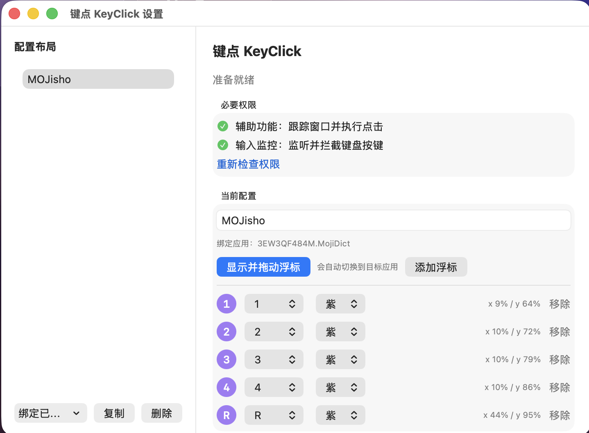
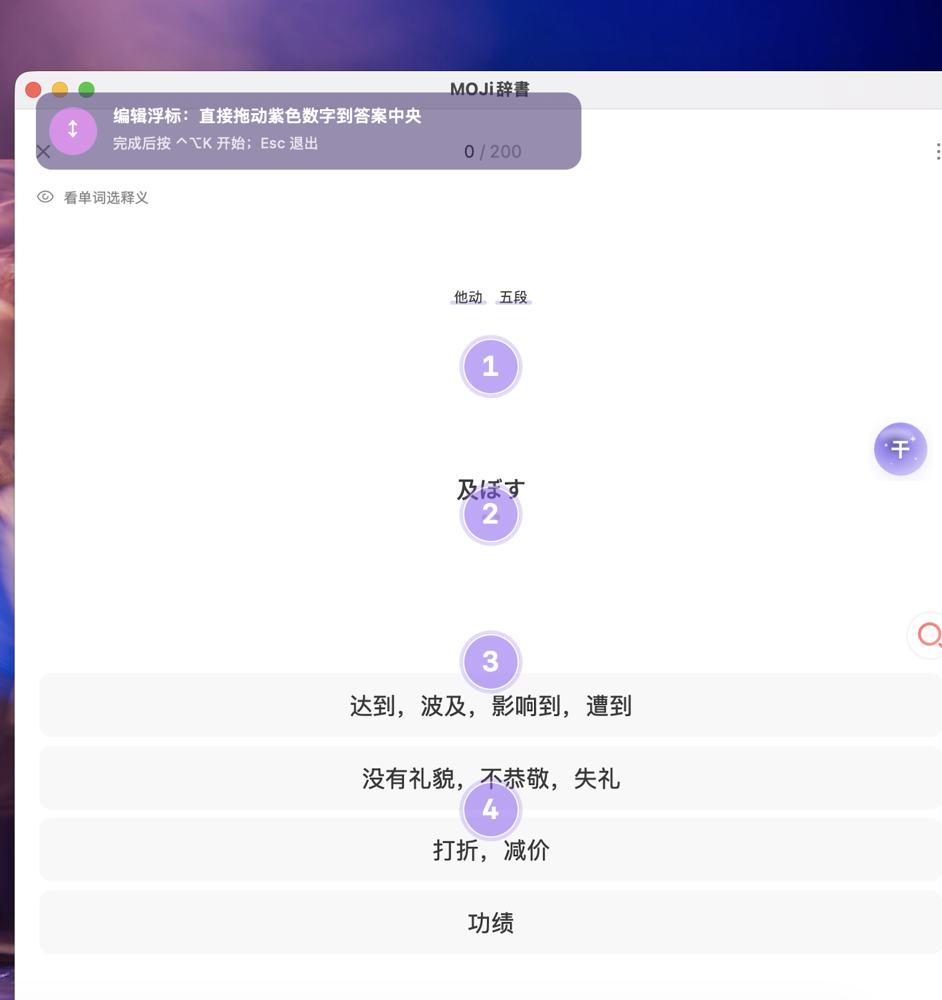
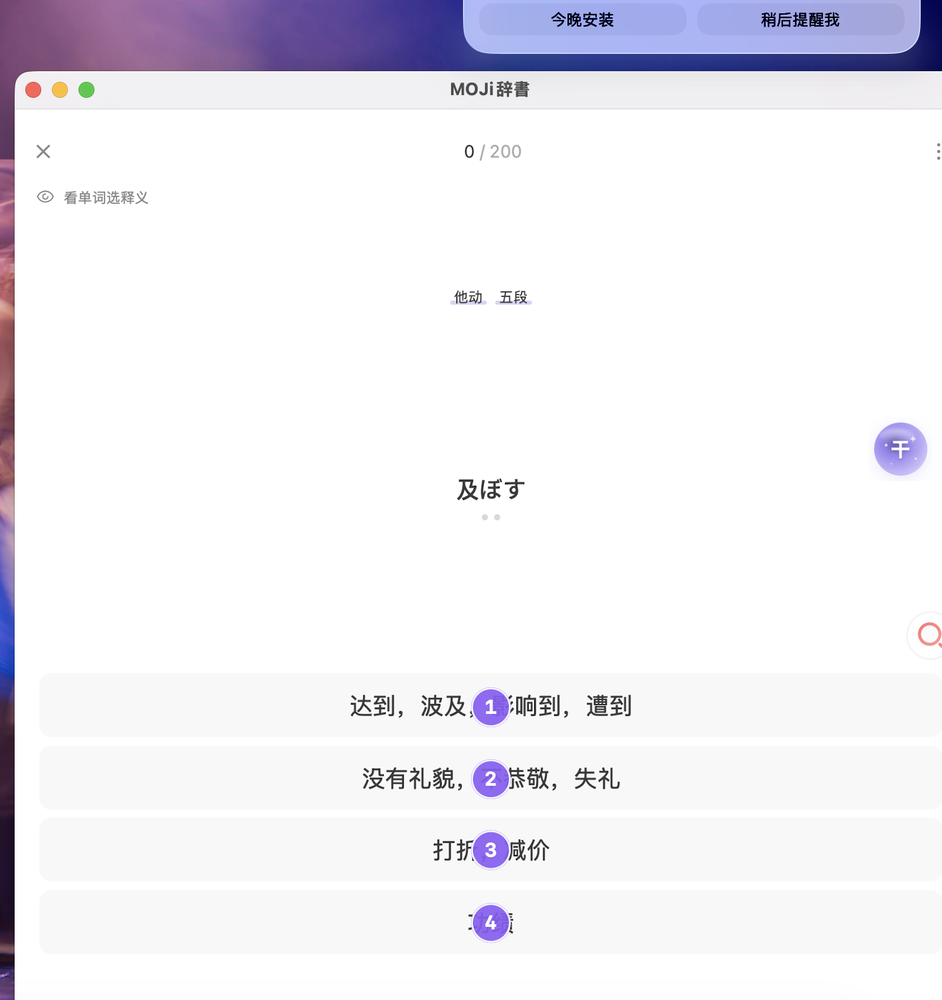
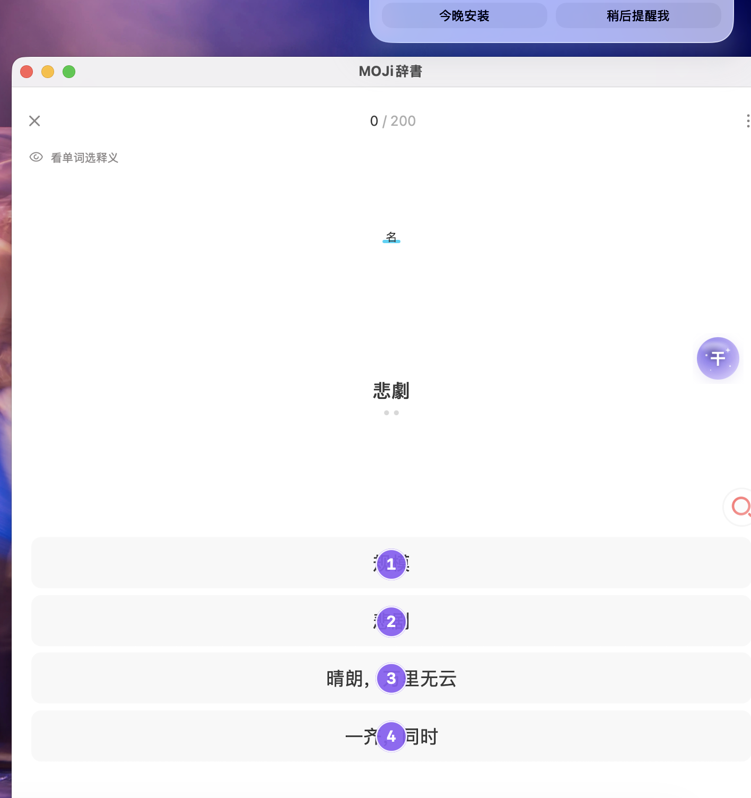

三步开始
真实使用界面

权限均就绪后，可管理配置与浮标键位。

编辑态有明确引导条，直接拖动紫色数字到答案中央。

点击模式浮层不阻拦鼠标。

实测按 `1` 后切换到下一题。
边界清晰
仅支持单次左键点击；没有高频连点、双击、右键、宏或 OCR。目标窗口切换、最小化、关闭时会自动退出点击模式。
把键盘按键，映射为当前窗口中的一次真实点击。拖动紫色浮标，按下对应按键，即可选择答案或按钮。
下载最新版本 →
权限均就绪后，可管理配置与浮标键位。

编辑态有明确引导条，直接拖动紫色数字到答案中央。

点击模式浮层不阻拦鼠标。

实测按 `1` 后切换到下一题。
仅支持单次左键点击；没有高频连点、双击、右键、宏或 OCR。目标窗口切换、最小化、关闭时会自动退出点击模式。